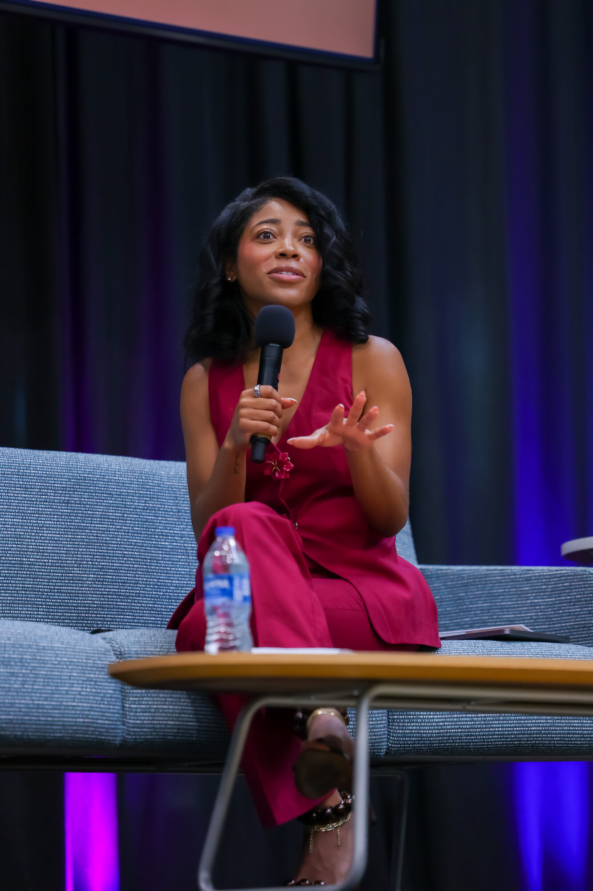
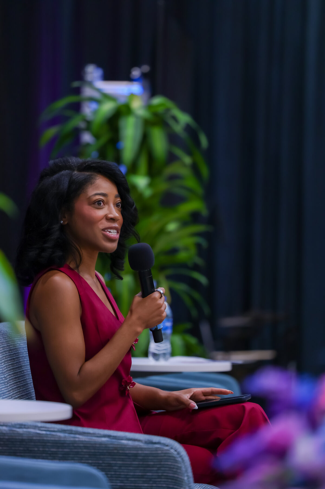
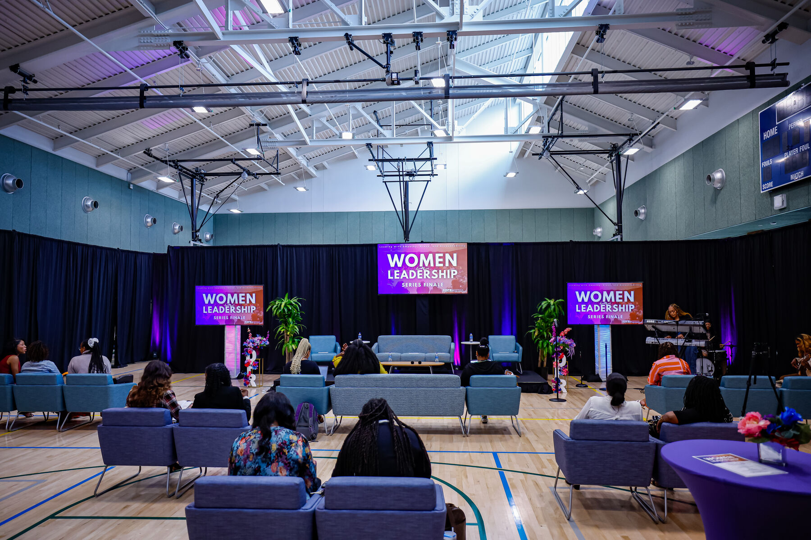
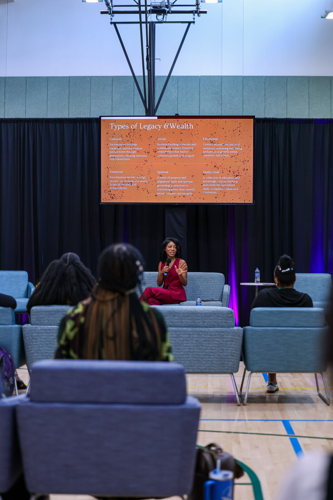
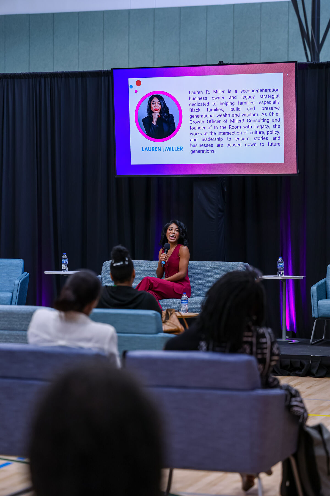
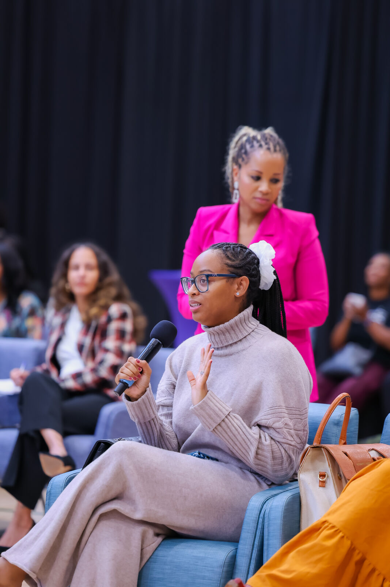

Speaking & Experiences
Keynotes, fireside conversations, moderated discussions, executive retreats, and interactive workshops.
Inquire About Speaking“You are building something whether you know it or not. The question is whether it’s intentional.”

Lauren Rosa Miller is a legacy architect, entrepreneur, and cultural thought leader who helps individuals, families, and organizations move from living by default to building with intention.
A Howard University graduate and 5th generation entrepreneur, Lauren comes from a lineage of landowners and farmers spanning nearly 150 years — including Miller Farms, one of the largest Black-owned farms in the Southeast. She built her first platform, Can’t Stay Put, into a community of 25,000+ and became recognized as a pioneer of the Black millennial movement, earning coverage across Essence, HuffPost, Travel Noire, XoNecole, and Blavity.
When her father became ill, Lauren stepped into the active work of legacy — documenting decades of undocumented institutional knowledge and leading the second-generation transition of Miller³ Consulting, the 35-year procurement and data analytics firm he built. That experience, learned in real time and not in a classroom, became the foundation of In The Room With Legacy, the platform she founded to help individuals and families build legacy with intention before crisis forces them to.
A viral tribute to her late father — viewed 3M+ times — brought national attention to the importance of legacy conversations, earning features on Good Morning America, ABC News, NewsNation, and USPS News. She has delivered a TED-style talk at Harvard Business School alongside her mother to a standing ovation, been featured in Harvard Business Magazine, and shared the stage with leaders like T-Mobile EVP Mike Katz on succession and generational longevity.
Today, as Chief Growth Officer and Co-Owner of Miller³ Consulting — a firm with $20B+ in procurement spend analyzed across 30+ states and 250+ client engagements — and Founder of In The Room With Legacy, Lauren brings a practitioner’s command of what it actually takes to build, run, and transfer something that lasts.

“I didn’t learn succession planning in a classroom. I learned it while my father was ill, the business still had to run, and no one had written any of it down.”Lived experience as credential
Selects from the Women in Leadership keynote series — a fireside-style session Lauren led on identity, wealth, and legacy.




Keynotes for family offices, business organizations, universities, leadership conferences, cultural institutions, and professional audiences. Each talk can be adapted to the room.
Before there were corporations, universities, or governments, there was family. Yet we often devote more attention to building professional institutions than strengthening the one responsible for shaping generations.
Drawing from nearly 150 years of family land stewardship and her experience navigating the succession of a multigenerational business, Lauren challenges audiences to rethink the family as an institution worthy of vision, governance, investment, and intentional leadership.
Audience takeaway: A new understanding of how families can operate with greater intention to preserve and transfer more than financial wealth.
When we talk about generational wealth, the conversation often begins and ends with money. But some of the most consequential inheritances never appear on a balance sheet.
Through personal storytelling and a multidimensional framework for understanding wealth, Lauren explores how families preserve and transfer relationships, knowledge, values, cultural identity, opportunity, and other forms of capital. She challenges audiences to recognize the wealth they may already possess and become more intentional about what they are creating for future generations.
Audience takeaway: A broader understanding of wealth and practical ways to identify, strengthen, and transfer nonfinancial assets.
Knowing where we come from can fundamentally change how we understand who we are and what we’re capable of becoming.
Drawing from her family’s nearly 150-year history of land stewardship in southwest Georgia, Lauren explores the role of family history in shaping identity, confidence, belonging, and generational possibility. This talk challenges audiences to see family stories not simply as memories of the past, but as resources that can inform decisions, strengthen relationships, and shape the future.
Audience takeaway: A renewed appreciation for family history as a source of identity, connection, and intergenerational wisdom.
Too often, succession planning begins when a transition is already underway. But preserving a business, an estate, or a family institution requires more than transferring legal ownership.
Drawing from her experience as a caregiver, successor, and co-owner of a multigenerational business, Lauren explores the human and operational dimensions of succession, from institutional knowledge and leadership preparation to family expectations and shared vision. She challenges audiences to think beyond preserving assets and consider how to preserve the purpose that made those assets meaningful.
Audience takeaway: A more comprehensive understanding of succession and the importance of preparing people, not simply transferring property.
At 25, Lauren became a caregiver for her father while navigating the responsibilities of family, business, and an uncertain future. That experience fundamentally changed how she understood love, responsibility, preparation, and legacy.
In this deeply personal talk, Lauren explores the conversations families often postpone until illness, loss, or an unexpected transition forces them to confront difficult decisions. Through storytelling and practical insights, she encourages audiences to begin conversations about family history, wishes, responsibilities, and succession while they still have the opportunity to do so together.
Audience takeaway: Greater confidence and urgency to initiate meaningful family conversations before a crisis makes them unavoidable.
In 2023, Lauren Rosa Miller posted a tribute to her late father. It was a daughter honoring a man whose story deserved to be told.
The story reached three million people and was covered by NewsNation’s Morning in America, Good Morning America, and ABC News. It showed how a family story can speak to people far beyond the room where it began, and how much people want to hear stories about family, memory, and legacy.
That’s what In the Room With Legacy™ is built to make space for.
Lauren Rosa Miller · NewsNation Morning in America · Featured on Good Morning America and ABC News
National broadcast, business, and academic coverage.
A viral postcard tribute to her late father — 3M+ views across platforms and national broadcast coverage on the power of legacy before loss.
TED-style intergenerational legacy talk alongside her mother, delivered to a standing ovation. Featured in Harvard Business Magazine.
“This Heiress Is On A Mission to Help the Black Community Through Succession Planning.” Featured speaker at the Disruptor Summit.
“Black Heirs: How Millennials Are Carrying Family Legacy and Generational Wealth.”
Featured speaker alongside T-Mobile EVP Mike Katz on succession planning and generational longevity.
The postcard story that started a national conversation about legacy, love, and what we leave behind.
For media inquiries: amedina@theampragency.com
Earlier press, from the Can’t Stay Put era — 25,000+ community, Black millennial movement:
A note from the room“Lauren would make an excellent keynote for your workshop or event. She embodies a deep knowledge and lived experience that lends authority to messages on leadership, change management, and strategy and innovation.”
Five audience-specific one-pagers — each with tailored positioning, speaking topics, and available formats. Pick the room, send the right one.
Whether onstage, around a boardroom table, or in conversation with families navigating important transitions, Lauren brings a perspective grounded in lived experience, institutional leadership, and a commitment to building what lasts.
Keynotes, fireside conversations, moderated discussions, executive retreats, and interactive workshops.
Inquire About SpeakingStrategic conversations and engagements focused on family legacy, succession, intergenerational stewardship, and institutional continuity.
Explore Advisory EngagementsPodcast interviews, editorial commentary, collaborative programming, and institutional partnerships centered on family, wealth, entrepreneurship, and legacy.
Explore PartnershipsKeynote (45–60 min), panel & fireside, half-day workshop, corporate retreat, commencement talk, family reunion keynote, faith community talk, and private advisory sessions.